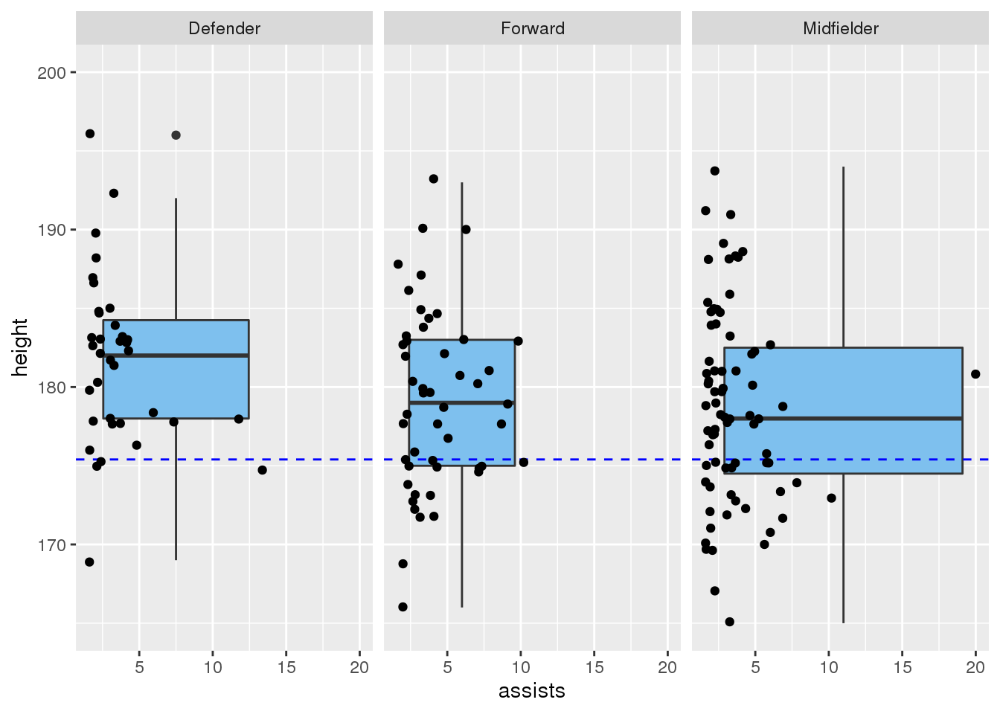
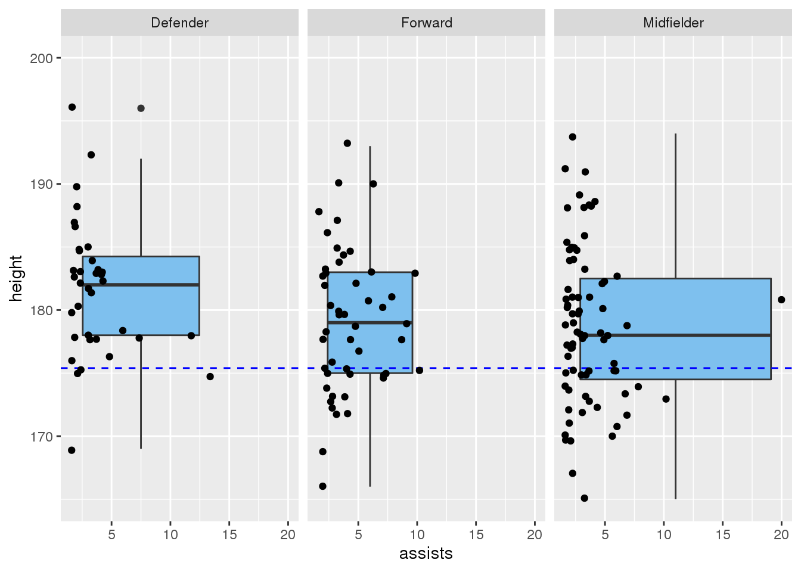
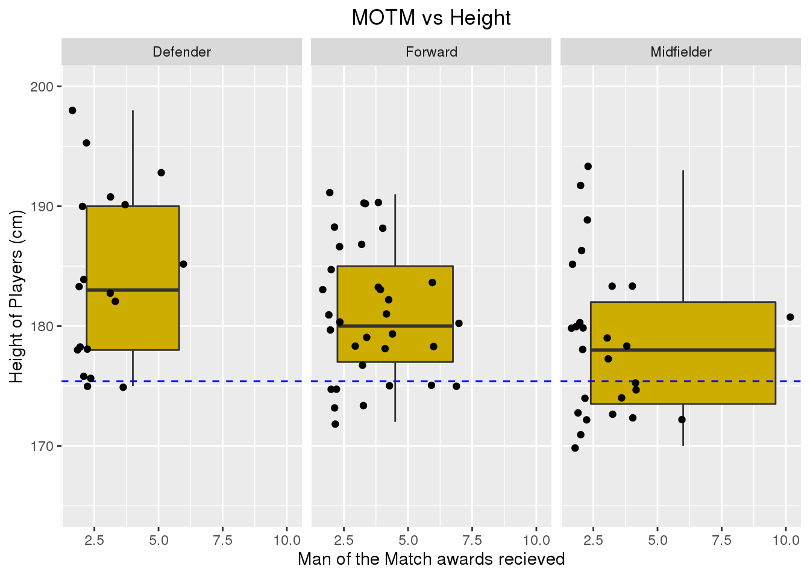

library(here)
library(ggplot2)
library(patchwork)
library(tidyverse)
library(readxl)
library(tinytex)
library(fivethirtyeight)
knitr::opts_chunk$set(echo = FALSE, tidy = TRUE)
epl1 <- read.csv(file = here::here("epl_data", "epl2020.csv"))
epl2 <- read.csv(file = here::here("epl_data", "EPL_19_20_GW_Timeseries.csv"))
epl3 <- read.csv(file = here::here("epl_data", "epl_players_stats.csv"))
epl4 <- read.csv(file = here::here("epl_data", "players_1920_fin.csv"))For this project, I am examining the English Premier League statistics by players stats, like height/age compared to their respective position. For example, in the datasets “epl_players_stats.csv” and “players_1920_fin.csv” from FiveThirtyEight, the file goes into full detail about players like height, position, goals per game, goals given up, age, ect, so I will be examining if a player if more likely to succeed in this league based on their height or age. The “players_1920_fin.csv”" there were 22,502 observations and 35 Variables, and “epl_players_stats.csv” has 522 observations and 41 variables. The variable codes is a factor with multiple levels explaing what teams each player plays for and their statistics for the 19/20 season.
The other two datasets “EPL_19_20_GW_Timeseries.csv” and “epl2020.csv” go into detail for the 19/20 statitics for each team in the English Premier League. In these data sets, we can find the results week by week of each team in the EPL and variable like win’s, loss’s, ties, points gained, goals given up, goals scored, ect.. The “EPL_19_20_GW_Timeseries.csv” has 1,048,575 observations and 77 variable and the “epl2020.csv” data set consits of 576 observations and 45 variables. These files have many levels going into full detail week by week, so i will have many outcomes to analyze.
*Question 1: First, do soccer players score more goals based on their height? I will analyze each players statistics for the 19/20 season based off their heights. Go into detail about if tall players score more goals than short players or vise versa. The measurement will be based off the overall median height of every player in the league. To test this, I will be putting the data organized in a data visualization like a scatter plot.
## id name nationality team team_id age height weight
## 1 816 Kevin De Bruyne be Man City 875 29 181 68
## 2 622 Bruno Fernandes pt Man Utd 314 26 179 69
## 3 812 Ricardo Pereira pt Leicester 652 26 175 70
## 4 287 Adama Traoré es Wolves 518 24 178 72
## 5 158 Riyad Mahrez dz Man City 875 29 179 67
## 6 576 Sadio Mané sn Liverpool 339 28 175 69
## position roles games exit_on_sub minutes rating_m goals assists
## 1 Midfielder M_C,M_L,M_R,FW 35 3 2800 7.97 13 20
## 2 Midfielder M_C,M_L,M_R 14 0 1223 7.73 8 7
## 3 Defender D_L,D_R,M_R 28 0 2520 7.50 3 2
## 4 Forward M_L,M_R,FW 37 10 2608 7.49 4 9
## 5 Forward AM_C,AM_L,AM_R 33 12 1942 7.48 11 9
## 6 Forward AM_C,AM_L,AM_R,FW 35 4 2756 7.45 18 7
## yel_cards red_cards shots_m aerials_won_m motm successful_passes_pt
## 1 3 0 2.8 0.5 10 81.5
## 2 2 0 3.1 0.2 3 75.7
## 3 1 0 0.6 1.5 2 78.9
## 4 1 0 1.2 1.2 6 74.4
## 5 0 0 2.2 0.3 3 90.1
## 6 3 0 2.2 1.2 7 81.6
## key_passes_m dribbles_won_m fouls_given_m offside_m dispossessed_m passes_m
## 1 3.9 1.4 0.8 0.1 0.9 54.5
## 2 2.1 1.1 1.0 0.1 0.9 55.5
## 3 1.0 2.1 1.3 0.0 1.1 56.1
## 4 1.3 5.0 2.1 0.2 1.8 19.2
## 5 1.8 1.6 0.9 0.4 1.0 33.2
## 6 1.7 2.0 1.5 0.4 1.6 31.5
## accurate_crosses_m accurate_long_passes_m accurate_through_passes_m tackles_m
## 1 2.1 3.5 0.4 1.3
## 2 1.0 3.3 0.3 1.6
## 3 0.3 2.1 0.1 4.2
## 4 1.2 0.2 0.1 0.9
## 5 0.6 1.7 0.2 0.8
## 6 0.3 1.0 0.1 1.3
## interceptions_m fouls_m clearances_m dribbled_past_m owm_goals
## 1 0.5 0.7 0.7 1.4 0
## 2 0.8 0.6 1.0 2.4 0
## 3 1.8 1.6 2.6 1.9 0
## 4 0.4 1.1 0.4 0.4 0
## 5 0.5 0.4 0.2 0.8 0
## 6 0.4 1.3 0.2 0.8 0
## gk_in_goal_area_saves_m gk_inside_box_saves_m gk_outside_box_saves_m
## 1 0 0 0
## 2 0 0 0
## 3 0 0 0
## 4 0 0 0
## 5 0 0 0
## 6 0 0 0
## gk_saves_m
## 1 0
## 2 0
## 3 0
## 4 0
## 5 0
## 6 0## avg_height
## 1 175.3985## Warning: Continuous x aesthetic -- did you forget aes(group=...)?## Warning: Removed 2 rows containing non-finite values (stat_boxplot).## Warning: Removed 2 rows containing missing values (geom_point).
## Warning: Continuous x aesthetic -- did you forget aes(group=...)?## Warning: Removed 2 rows containing non-finite values (stat_boxplot).## Warning: Removed 3 rows containing missing values (geom_point).## Warning: Continuous x aesthetic -- did you forget aes(group=...)?The boxplot graph above shows the data for each position. The blue dashed line shows the average height of the players in the English Premier League, which is 175.4 cm or 5’7 ft. So, the results show that taller players tend to score more as forwards, which is surprising to me, as I would think a bit shorter, more agile player would be more effective.
#Question 2: What team had better player performance?
Getting the average age of the players for each team and basing that with their results. Respectively, comparing if they score more goals, prevent more goals, and their wins, then plotting this into a bar chart.
 

#Question 3: Which player scored more goals per game?. Do team that spend more money obtaining and paying more players translate to more wins. I will be comparing the total amount spent by each team and comparing them in a bar chart.
##
## Attaching package: 'cowplot'## The following object is masked from 'package:patchwork':
##
## align_plots
#Conclusion
More analysis and question to come.
*To be Determined